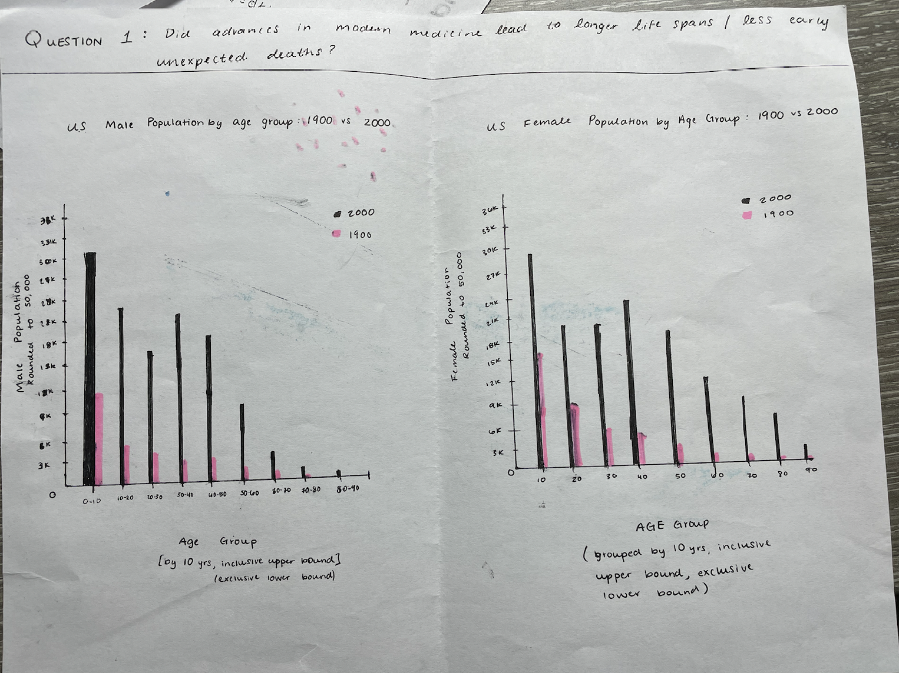
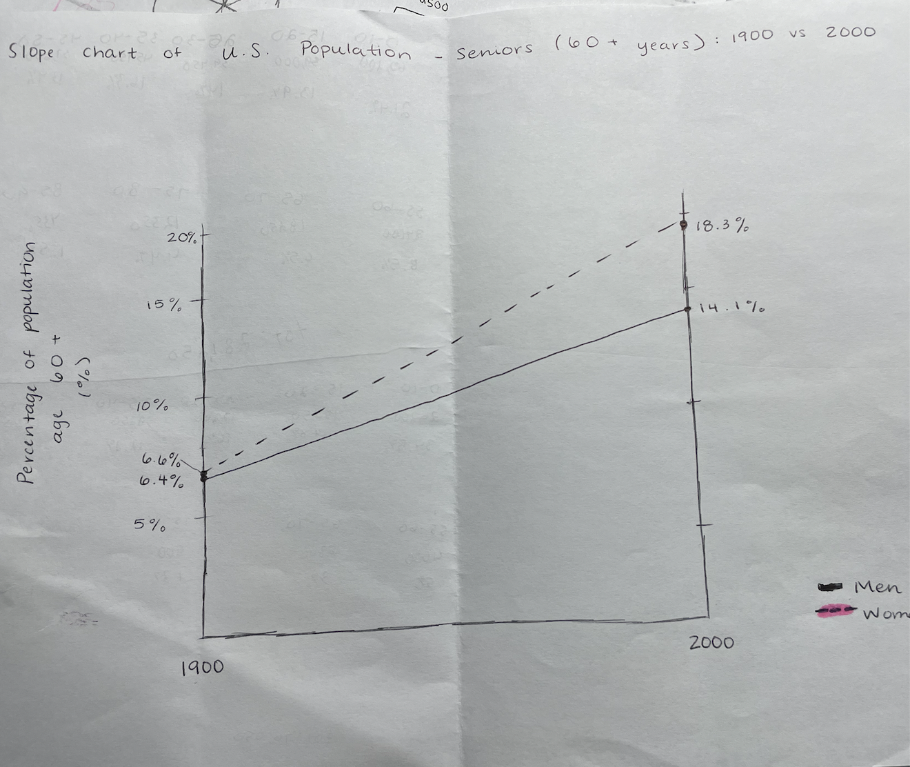
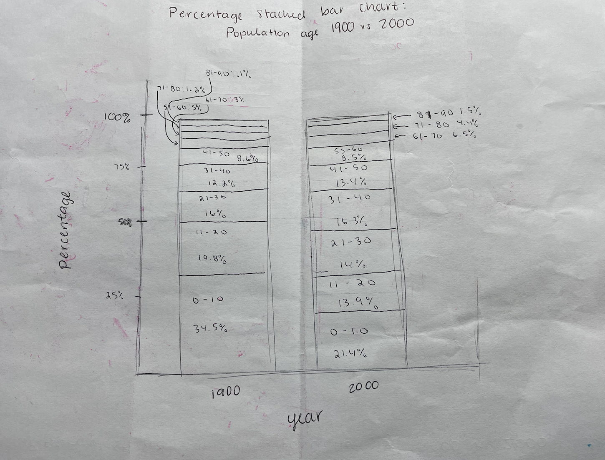
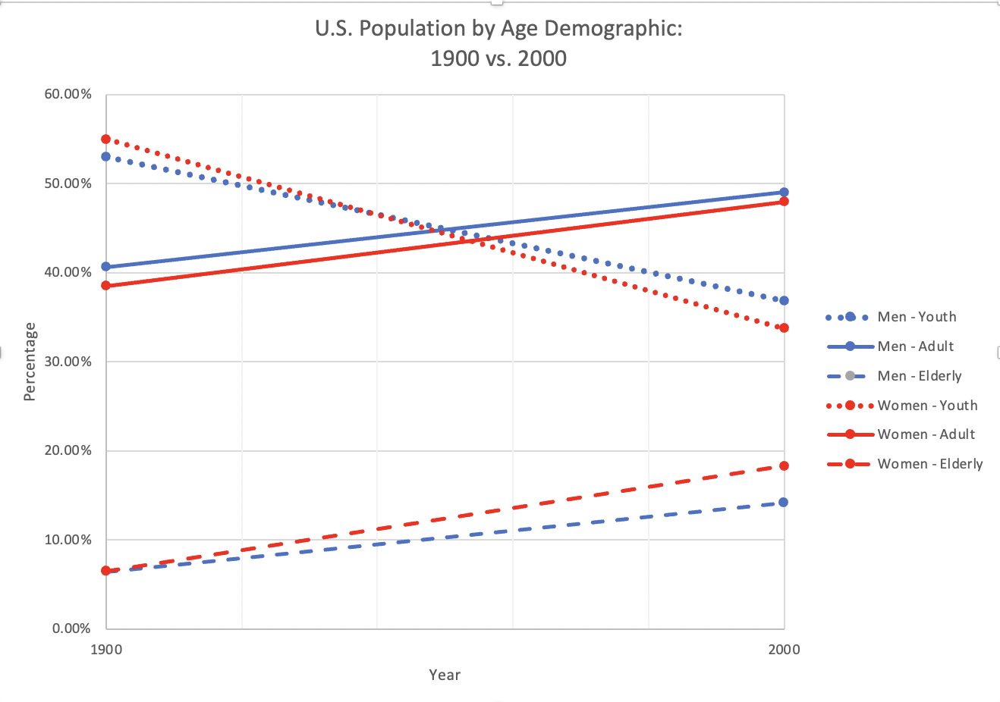

Question: Did advances in modern medicine lead to longer life spans/less early and preventable deaths?

Two bar graphs with one being focused on men and the one being women, separated by age and showing two bars are 1900 and 2000.
Design Rationale for Sketch 1:
My motivation for generating this sketch was to show that lives were getting longer in 2000 in comparison to 1900. I was not really sure what I was expecting to see, but I figured that since the data was groups categorized by their population, a bar chart would be a good idea.
I feel as if the data was well-conveyed in these bar graphs as it was quite easy to understand with the title, axes, and legends. However, I am not entirely sure that the question was properly answered with these graphs. I did not take into account the fact that population in general increased over the course of the century, so the difference between the 1900 and 2000 bars were more noticeable than the actual range of bars. I also had to combine age groups for categories in order to make the graph more readable, something I do think was accomplished, however this might have also not worked well for the sake of the bar graph. This design choice might have led to strange and statistically significant dips in population going overlooked.
In the next sketch, my goal is to better convey the increase in lifespan. I also think that after creating this graph, my question is changing to just see if lifespans have grown longer in the past century as there is not enough data about early and preventable deaths.

Slope chart for 60+ age group with left side being 1900 and right side being 2000, split up by gender.
Design Rationale for Sketch 2:
My motivation behind generating this sketch was to better see if there was an increase in lifespan as my previous sketch did not show this well. I realized I should probably be focusing on the elderly population as I am trying to show that there are more people that make it to 60 due to medicine. For that reason I wanted to show that both men and women are seeing longer lives in 2000. I was inspired by the readings on sketches and decided on a slope chart.
I think that this chart was fairly simple to understand which is always crucial when making charts. The slope graph does communicate the point that people are living longer lives as the elderly population more than doubles for both genders. In retrospect I think this was the best sketch to answer my original question. It shows the percentage of elderly rather than the number which I think helps in my previous problem of the population increase. Perhaps it would've been better to change the colors of the lines to show the difference in gender.
In the last sketch, I wanted to see the percentages of all the different age groups because I thought that this graph might be considered deceiving to readers as I could be 'hiding' a strange drop in percentage for a younger age.

Stacked percentage chart of total population separated by age groups in both 1900 and 2000.
Design Rationale for Sketch 3:
My motivation for creating this graph was to address both of the issues I faced in creating my first two graphs. For that reason, it shows the percentages of all age groups across both census years. I figured the most concise way to do this on paper that would still be understandable was a stacked percentage bar chart.
I think this was also very easy to understand. It shows the percentage distribution changing over the years quite well. It was difficult getting the proportions correct on paper which is why the sketch itself is probably incorrect. Especially for smaller percentages, it does look a bit messy which could affect the reader's understanding. Yet overall, I do think that this sketch answers the question very well. I attempted to use titling and axes to my advantage to be able to make this crowded graph simple.
For my final sketch, I think a modification of this graph or a combination somehow of this and the previous graph will best answer the question.
Reflection
The act of making these three graphs helped me truly understand the shape and distribution of this dataset. After making the first sketch, I was able to truly realize the increase overall in population over the span of the century. This realization also came with the understanding that the choice of a frequency based bar graph was not ideal. For anyone looking at it without the basis of the original question, they would probably conclude that this sketch is to show the overall growth in population rather than the lengthier lifespans with time. However, the sketch itself was quite simple to read and understand due to the use of different colors, clear title, and descriptive axes. When moving onto the next sketch, I focused on genuinely trying to answer my question and decided to hone in on a singular age group. Using a slope graph was incredibly helpful in showcasing the rise in the elderly population from 1900 to 2000. This was a simple graph that accurately answered the question. I do think that there is a flaw that people might interpret that there are less young people in 2000. However, this can be countered with historical context knowing that the United States is not a country like China that has endured various events that would dramatically change the amount of children being born. I did however think that this graph failed to show that other older age groups also increased in size proportionate to the general population at that time which is why I settled on a stacked percentage bar graph. This graph was able to show the relative size of each age group in both 1900 and 2000. I decided to combine the two genders in this graph as I felt as though having just two bars would show for a more dramatic increase. The weaknesses I found with this graph fell more on my artistic skills as the scaling wasn't entirely accurate and the smaller percentage age groups were very clumped together. However, the titling and axes were once again clear for anyone stumbling upon this graph. I think that for the final graph, I am going to incorporate aspects from both my slope chart and my stacked percentage bar chart to answer the same question I posed in phase 1. I think that these were much stronger in answering the question as they showed relative populations rather than the stark differences seen in my first graph. I was pleasantly surprised that my gut answer to the question was correct, and I had my very own visualizations to prove it.
Phase Two: Final Design

This slope chart shows the three major different age distributions of youth, adult, and elderly, and how the percentage of them changed from 1900 to 2000.
Design Process & Design Decisions
This visualization is a slope chart showing the change in population distribution of the three major age groups of youth (0-20), adult (20-60), and elderly (60+). This visualization answers the question of modern medicine increasing lifespans. It does this by showing that the disproportionately large percentage of youth is decreasing over time to show a more accurately large adult population and a statistically significant elderly population among both genders. This visualization is easy to understand as there are just 6 lines and 2 colors so it is not too much to take in at once. The legend explains which color relates to which gender. The use of dotted, dashed, or full lines for each age group is consistent in both genders to allow for ease to the eye and better understanding of the reader. The maximum percentage was chosen to be sixty percent instead of one hundred percent so that the change in percentage over the course of the century could be better seen, and the change could be deemed as more important. However, each age group might be obscured with this graph as it generalized eighteen different age groups into just three. Readers would not be able to know the change in the 21-25 male age group over time from this graph. I decided that the details of each age group would have to be overlooked in order to answer the bigger question of whether or not lifespans were getting longer due to the modern medicine of the 2000s.
Reflection
Phase one greatly influenced my work in phase two. For one, I utilized the same question as I felt that using the sketches I made in phase 1, I could truly answer it with a visualization in phase 2. I also ended up using the same style of chart as one of the charts I used in phase 1. However, I did not just do the exact same thing that I did for the slope chart in phase 2 that I did in phase 1. I was able to use the information I got from sketching the stacked percentage bar chart to better inform me on how to improve my slope chart. I realized with that stacked bar chart that I wanted to show the change of percentages in all of the age groups over time. I was able to also apply what I learned about 'too much going on' from the first chart in phase 1 with the many bars. I felt as if there was too much going on in my first sketch and the question was not being answered. My final visualization seen in phase two would not be possible without the lessons learned from the combination of my first three sketches.